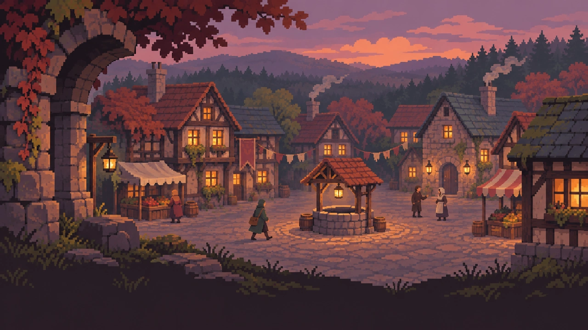

Free multiplayer RPG Open beta
Explore the
Gloamwood
Leave Cinderwatch with a lantern and a friend. Gather ore, learn spells, and build a home out in the woods.
Checking world status…
Cinderwatch at dusk World art
In the game
Read patch notesThe twelve schools of magic
Open the skill sky with K to see the twelve schools. Warding spells include Iron Skin, a shield that can return damage to an attacker.
World artwork


Desktop launcher
The launcher opens the latest version of Seyble and needs an internet connection. On a phone or tablet, play in your browser and turn sideways for touch controls.
Extract the ZIP, then open the launcher. On Mac, the unsigned app may need approval in Privacy & Security. Mac install help
Purchases and beta progress
Seyble will stay free after beta. The shop sells cosmetics. Character progress may reset during beta, and paid cosmetics carry over.